界面上看得见的东西，十有八九是一张图。这一章从“一张 PNG 怎么变成能用的精灵”讲起，把 Image 的四种类型逐一拍出来对比，拆开九宫格和扇形填充的网格生成源码，再做六个游戏里天天见的案例：九宫格对话框、技能冷却、延迟白条血条、不规则按钮、无限滚动背景和头像框。
把一张 PNG 拖进 Project 窗口，Unity 会把它导入成纹理（Texture2D）。纹理只是一块像素数据，UGUI 的 Image 组件不能直接用它，Image 要的是精灵（Sprite）。精灵可以理解成“纹理上的一个矩形区域 + 一些附加信息”：这块区域在纹理里的位置、轴心（Pivot）、九宫格边框（Border）、每单位多少像素（Pixels Per Unit）。一张纹理可以切出很多个精灵，这就是图集的基础。
所以第一步永远是：把纹理的导入类型改成 Sprite。
图片一多，一张张点 Inspector 很容易漏设。实际项目里通常写一个编辑器脚本统一设置，下面是本章生成纹理时用的函数，和你在 Inspector 里做的事一一对应：
注意 spriteBorder 的分量顺序是 x = 左、y = 下、z = 右、w = 上，和 Sprite Editor 面板里 L/T/R/B 的排列顺序不一样，写代码时很容易填错。SaveAndReimport() 相当于点 Apply。更进一步，可以把这套规则写进 AssetPostprocessor.OnPreprocessTexture，让某个目录下的图片一导入就自动套用——配套工程的 _Core/Editor/BookSpriteImporter.cs 就是这么做的，第 21 章会专门讲 UI 资源规范检查。
Image 组件上有个 Set Native Size 按钮，点一下就把 RectTransform 的尺寸设成“图片原始大小”。可这个“原始大小”到底是多少画布单位？看源码：
// 摘自 com.unity.ugui 1.0.0 Runtime/UI/Core/Image.cs
public float pixelsPerUnit
{
get
{
float spritePixelsPerUnit = 100;
if (activeSprite)
spritePixelsPerUnit = activeSprite.pixelsPerUnit;
if (canvas)
m_CachedReferencePixelsPerUnit = canvas.referencePixelsPerUnit;
return spritePixelsPerUnit / m_CachedReferencePixelsPerUnit;
}
}
public override void SetNativeSize()
{
if (activeSprite != null)
{
float w = activeSprite.rect.width / pixelsPerUnit;
float h = activeSprite.rect.height / pixelsPerUnit;
rectTransform.anchorMax = rectTransform.anchorMin;
rectTransform.sizeDelta = new Vector2(w, h);
SetAllDirty();
}
}
也就是：
两个值默认都是 100，比值为 1，所以平时“原生尺寸 = 像素尺寸”。图 4-2 是同一张 128×128 的头像，只改精灵的 Pixels Per Unit，点 Set Native Size 的结果：PPU 越大，图越小。
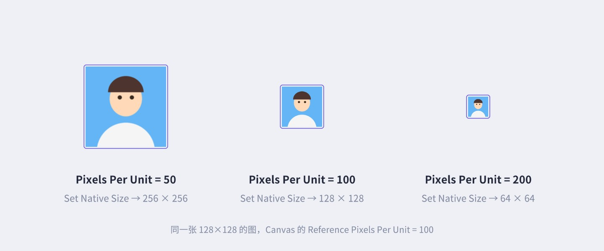
这有什么用？最常见的是多倍图：美术按 2 倍分辨率出图（例如按钮画成 400×200，实际想显示 200×100），把这批图的 PPU 设成 200，Set Native Size 就直接得到正确的逻辑尺寸，九宫格边框也会按一半显示，在高分屏上更清晰。另外注意源码里的一行：rectTransform.anchorMax = rectTransform.anchorMin——Set Native Size 会把锚点“合拢”，如果这个 Image 原本是拉伸锚点，点完就不再拉伸了。
对话框、按钮、输入框这类元素尺寸经常变，如果整张图直接拉伸，圆角和描边会被拉变形。解决办法是九宫格（9-slice）：用四条线把图切成 3×3 九块，四个角保持原样，四条边只沿一个方向拉伸，中间一块双向拉伸。这四条线的位置就是精灵的 Border（边框），在 Sprite Editor 里设置。
设好边框后，Image 的 Image Type 选 Sliced 就会按九宫格绘制。图 4-4 是原理：左边是 160×160 的原图和四条切分线，右边是把它画到一个更宽的矩形上时，九块各自被拉成什么样。
源码里这个过程非常直白：先算出 4 个 x 坐标和 4 个 y 坐标（s_VertScratch），再算出对应的 4 个 u 和 4 个 v（s_UVScratch，来自精灵的外 UV 和内 UV），然后双重循环拼出 9 个四边形：
// 摘自 com.unity.ugui 1.0.0 Runtime/UI/Core/Image.cs，GenerateSlicedSprite（有删节）
Rect rect = GetPixelAdjustedRect();
Vector4 adjustedBorders = GetAdjustedBorders(border / multipliedPixelsPerUnit, rect);
s_VertScratch[0] = new Vector2(padding.x, padding.y);
s_VertScratch[3] = new Vector2(rect.width - padding.z, rect.height - padding.w);
s_VertScratch[1].x = adjustedBorders.x; // 左边框位置
s_VertScratch[1].y = adjustedBorders.y; // 下边框位置
s_VertScratch[2].x = rect.width - adjustedBorders.z; // 右边框位置
s_VertScratch[2].y = rect.height - adjustedBorders.w; // 上边框位置
s_UVScratch[0] = new Vector2(outer.x, outer.y);
s_UVScratch[1] = new Vector2(inner.x, inner.y);
s_UVScratch[2] = new Vector2(inner.z, inner.w);
s_UVScratch[3] = new Vector2(outer.z, outer.w);
for (int x = 0; x < 3; ++x)
for (int y = 0; y < 3; ++y)
{
if (!m_FillCenter && x == 1 && y == 1)
continue; // Fill Center 关闭：跳过中间那块
AddQuad(toFill, /* 位置 */ ..., /* UV */ ...);
}
几个细节值得记住：
GetAdjustedBorders 会把两侧边框按比例压缩，保证不重叠（图 4-6 左下角那个 80×80 的小框就是这种情况）。所以九宫格图的边框不要切得太大，否则小尺寸时四角会被压扁。在 Hierarchy 里右键 就能建一个 Image。它的 Inspector 字段会随 Image Type 变化，图 4-5 是 Sliced 类型时的样子。
同一张图换不同的 Image Type，画出来的样子差别很大。图 4-6 把四种类型放在一起：
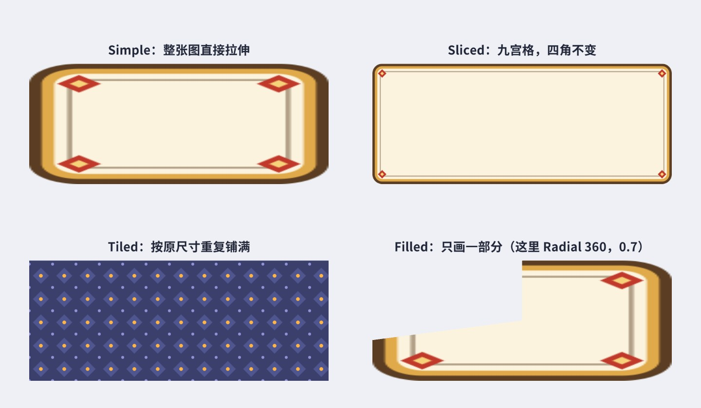
把整张精灵映射到矩形上，宽高比不对就变形。图 4-6 左上角，四个角的菱形花饰被横向拉成了扁菱形，圆角也变成了椭圆。Simple 适合图标、头像、插画这类尺寸固定或能接受等比缩放的图，通常配合 Preserve Aspect 使用。网格只有 4 个顶点，是最便宜的一种。
按上一节的九宫格规则绘制。前提是精灵设置了 Border，没有边框时 Sliced 会退化成 Simple（源码第一行就是 if (!hasBorder) { GenerateSimpleSprite(...); return; }）。图 4-7 是同一张对话框边框画成不同尺寸的样子，四角的花饰始终保持原样。
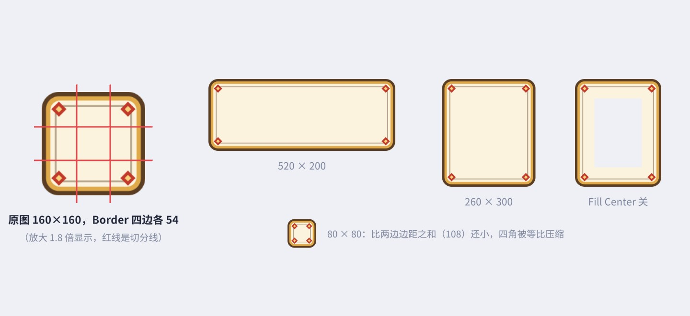
Sliced 类型多出一个 Pixels Per Unit Multiplier：它乘在 PPU 上，数值越大，边框在屏幕上显示得越小。图 4-8 用同一张 round_32（72×72 的圆角矩形）演示——想要更大的圆角又不想重新切图，把它调小就行。
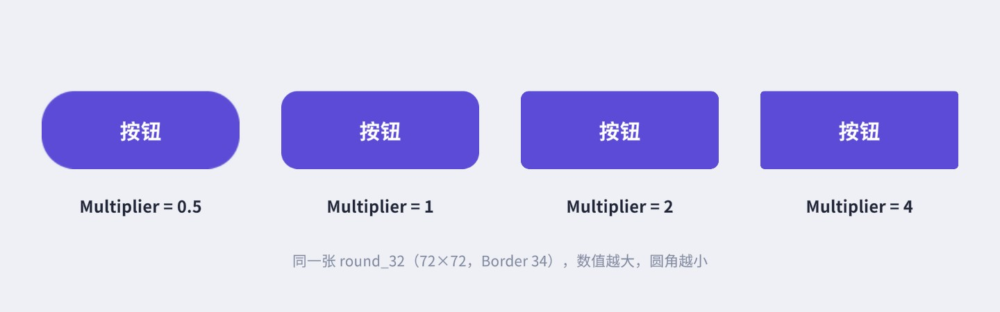
这个参数的实用价值很高：项目里只要准备一张“圆角素材”，不同控件通过 Multiplier 得到不同的圆角半径。图 4-8 左一 Multiplier 0.5 时边框按 2 倍显示，两侧边框之和接近按钮高度，于是按钮变成了胶囊形。
按精灵的原始尺寸（同样受 PPU 影响）重复铺满整个矩形，适合地板、花纹背景、虚线边框。Tiled 的实现分两条路，源码里有一段很关键的判断：
// 摘自 Image.cs，GenerateTiledSprite（有删节）
if (activeSprite != null && (hasBorder || activeSprite.packed ||
activeSprite.texture != null && activeSprite.texture.wrapMode != TextureWrapMode.Repeat))
{
// 有边框、被打进图集、或者纹理不是 Repeat：只能“一块一块”生成四边形来平铺
// 顶点数 = 块数 × 4，超过 65000 会报错并自动放大每块的尺寸
...
}
else
{
// 纹理是 Repeat 且没有边框、没进图集：只生成一个四边形，把 UV 放大到 0~N，靠 GPU 重复采样
...
}
结论很实用：要平铺的图，单独放、Wrap Mode 设成 Repeat、不要打进图集，这样无论铺多大都只有 4 个顶点。如果图在图集里（packed），UV 不能超出它在图集里的那一小块，Unity 只能按块生成网格，铺得越密顶点越多。精灵带 Border 时，Tiled 还会把边框当作九宫格的四边处理（四边沿边重复、四角不动），中间区域平铺，可以做“花边 + 花纹底”的面板。
根据 Fill Amount（0~1）只画精灵的一部分，是进度条、血条、技能冷却的主力。它的选项最多，单独用一节来讲。
Filled 类型有四个专属参数：
image.fillAmount = 0.6f。
Clockwise（Radial 类型有）顺时针还是逆时针填充。
图 4-9 是五种方式在三个填充比例下的实拍，底下半透明的是完整的原图：
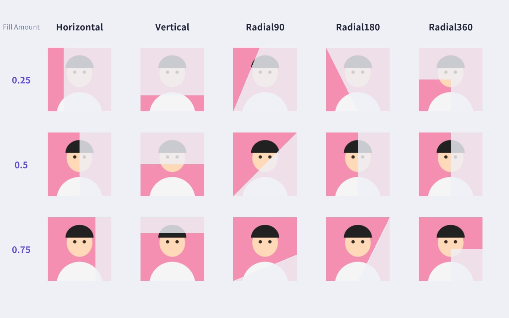
环形进度条最常用 Radial 360，它的起点和方向由 Origin 和 Clockwise 决定，图 4-10 把八种组合都拍了出来（Fill Amount 都是 0.3）。做“时钟走过的冷却”，常用 Origin = Top；倒计时“从满到空、像时钟一样顺时针退去”，要把 Clockwise 关掉——遮罩是逆时针收缩的，露出来的部分看起来就是顺时针扫过。
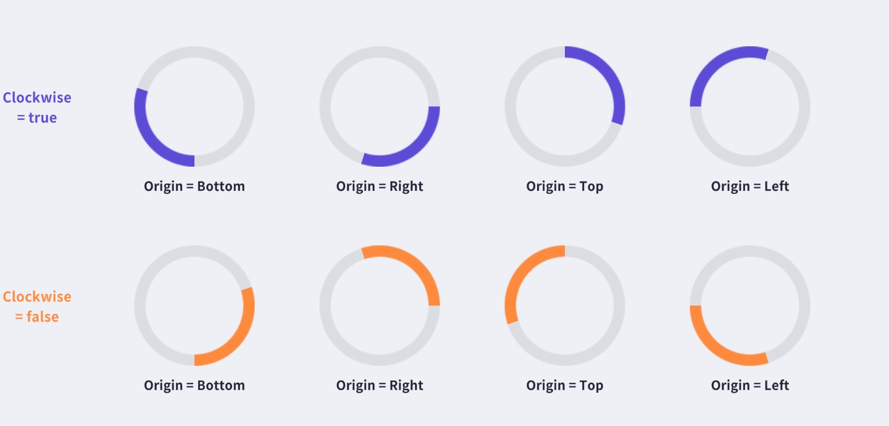
水平和竖直填充很简单：把矩形的一条边往回缩，UV 同比例缩，仍然是一个四边形。径向填充复杂一些——GPU 只认三角形，没有“扇形”这种图元。UGUI 的做法是把矩形切成几块四边形，再把每块四边形的一个或两个顶点“挪”到扫描线上，让四边形变成三角形或梯形。以 Radial 360 为例（图 4-11）：
// 摘自 Image.cs，GenerateFilledSprite 中 Radial360 的部分（有删节）
for (int corner = 0; corner < 4; ++corner)
{
// 算出这个象限的 4 个顶点位置 s_Xy 和 UV s_Uv ...
// 把总进度换算成“这个象限填了多少”（0~1）
float val = m_FillClockwise ?
m_FillAmount * 4f - ((corner + m_FillOrigin) % 4) :
m_FillAmount * 4f - (3 - ((corner + m_FillOrigin) % 4));
if (RadialCut(s_Xy, s_Uv, Mathf.Clamp01(val), m_FillClockwise, ((corner + 2) % 4)))
AddQuad(toFill, s_Xy, color, s_Uv);
}
static bool RadialCut(Vector3[] xy, Vector3[] uv, float fill, bool invert, int corner)
{
if (fill < 0.001f) return false; // 这个象限一点都没填：不生成
if ((corner & 1) == 1) invert = !invert;
if (!invert && fill > 0.999f) return true; // 填满：原样保留
float angle = Mathf.Clamp01(fill);
if (invert) angle = 1f - angle;
angle *= 90f * Mathf.Deg2Rad; // 0~1 换算成 0~90 度
float cos = Mathf.Cos(angle), sin = Mathf.Sin(angle);
RadialCut(xy, cos, sin, invert, corner); // 挪顶点位置
RadialCut(uv, cos, sin, invert, corner); // 同样挪 UV，保证贴图不变形
return true;
}
每个象限的“填充量”是总进度乘 4 再减去这个象限前面已经填满的象限数，然后夹到 0~1：小于 0 的象限不生成，大于 1 的原样保留，只有扫描线所在的那一个象限需要变形。顶点和 UV 用同一套参数挪动，所以贴图跟着几何形状一起被“裁”掉，而不是被压缩。Radial 90 只有一个四边形，Radial 180 是左右（或上下）两块，原理相同。
理解这个实现有两个实际意义：第一，改 fillAmount 只会让这一个 Image 重建网格（触发 SetVerticesDirty），开销很小，每帧改也没问题；第二，Filled 是在整张精灵上切的，不支持九宫格。如果精灵是带圆角的 Sliced 图，换成 Filled 后圆角会被当成普通像素一起拉伸、一起切掉。做圆角进度条，常见做法是“Sliced + 改宽度（或锚点）”，或者用 RectMask2D 裁剪一张完整的圆角条，第 6 章的防连点按钮就用了改锚点的写法。
MapCoordinate 对 Filled 和 Simple 走的是同一条分支）。冷却遮罩记得关掉 Raycast Target，否则它会挡住下面的按钮。Simple 和 Filled 类型有 Preserve Aspect 选项。勾上后，精灵按原始宽高比缩放到能完整放进 RectTransform 的最大尺寸，多出来的方向留空（图 4-12）。用于头像、商品图、立绘这类不能变形的图片。
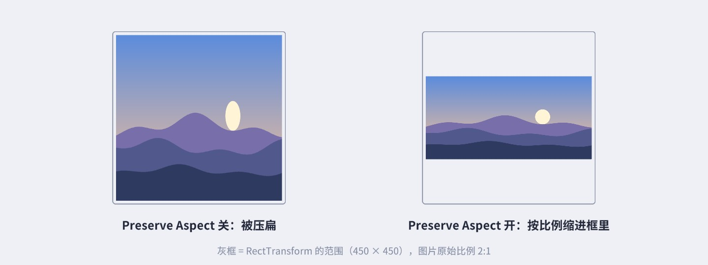
要注意它只改变“画在哪里”，RectTransform 本身的尺寸不变：Layout 计算、射线检测（不开 alpha 检测时）依然按灰框的整个范围。如果希望 RectTransform 的尺寸也跟着图片比例走，用 Aspect Ratio Fitter 组件（第 10 章）。
UGUI 的点击检测由 Canvas 上的 GraphicRaycaster 完成：它遍历这个 Canvas 下所有开了 Raycast Target 的 Graphic，看鼠标是否落在它们的矩形里（第 11 章会读这段源码）。这带来两个常见问题：
alphaHitTestMinimumThreshold。矩形检测通过之后，GraphicRaycaster 还会调用 Graphic 实现的 ICanvasRaycastFilter.IsRaycastLocationValid 做二次过滤，Image 的实现如下：
// 摘自 Image.cs（有删节）
public virtual bool IsRaycastLocationValid(Vector2 screenPoint, Camera eventCamera)
{
if (alphaHitTestMinimumThreshold <= 0) return true; // 默认 0：矩形内都算点中
if (alphaHitTestMinimumThreshold > 1) return false;
if (activeSprite == null) return true;
Vector2 local;
if (!RectTransformUtility.ScreenPointToLocalPointInRectangle(rectTransform, screenPoint, eventCamera, out local))
return false;
Rect rect = GetPixelAdjustedRect();
if (m_PreserveAspect)
PreserveSpriteAspectRatio(ref rect, new Vector2(activeSprite.texture.width, activeSprite.texture.height));
local.x += rectTransform.pivot.x * rect.width;
local.y += rectTransform.pivot.y * rect.height;
local = MapCoordinate(local, rect); // 换算到纹理像素坐标（考虑了九宫格）
float x = local.x / activeSprite.texture.width;
float y = local.y / activeSprite.texture.height;
try
{
return activeSprite.texture.GetPixelBilinear(x, y).a >= alphaHitTestMinimumThreshold;
}
catch (UnityException e)
{
Debug.LogError("Using alphaHitTestMinimumThreshold greater than 0 on Image whose sprite texture " +
"cannot be read. ...");
return true;
}
}
流程是：屏幕坐标 → Image 本地坐标 → 纹理像素坐标 → 读这个像素的 alpha，和阈值比较。从中可以读出三条使用规则：
GetPixelBilinear 会抛异常。实际上更早就会出错：阈值的 setter 里有检查，纹理不可读或是 Crunch 压缩时直接抛 InvalidOperationException。activeSprite.texture，打包后是整张图集纹理。// Not serialized until we support read-enabled sprites better. 所以在 Inspector 里找不到这个属性，必须在运行时用代码设置。Image 的 Raycast Padding 则是在矩形检测阶段起作用的：GraphicRaycaster 判断点是否在矩形内时，会先用 raycastPadding 把矩形内缩（负值外扩）。手机上图标只有 48 像素、手指却有一大片，给图标填 (-20, -20, -20, -20) 的 Padding，点击范围就大了一圈，而画面不变。
创建的 RawImage 是 Image 的“简化版兄弟”：它直接显示一张 Texture（任何纹理，包括 RenderTexture、摄像头画面 WebCamTexture、运行时 new 出来的 Texture2D），不需要 Sprite，也没有九宫格、填充这些功能，只多了一个 UV Rect：用 (X, Y, W, H) 指定显示纹理的哪一部分。它的网格生成只有十几行：
// 摘自 com.unity.ugui 1.0.0 Runtime/UI/Core/RawImage.cs
protected override void OnPopulateMesh(VertexHelper vh)
{
Texture tex = mainTexture;
vh.Clear();
if (tex != null)
{
var r = GetPixelAdjustedRect();
var v = new Vector4(r.x, r.y, r.x + r.width, r.y + r.height);
var scaleX = tex.width * tex.texelSize.x;
var scaleY = tex.height * tex.texelSize.y;
var color32 = color;
vh.AddVert(new Vector3(v.x, v.y), color32, new Vector2(m_UVRect.xMin * scaleX, m_UVRect.yMin * scaleY));
vh.AddVert(new Vector3(v.x, v.w), color32, new Vector2(m_UVRect.xMin * scaleX, m_UVRect.yMax * scaleY));
vh.AddVert(new Vector3(v.z, v.w), color32, new Vector2(m_UVRect.xMax * scaleX, m_UVRect.yMax * scaleY));
vh.AddVert(new Vector3(v.z, v.y), color32, new Vector2(m_UVRect.xMax * scaleX, m_UVRect.yMin * scaleY));
vh.AddTriangle(0, 1, 2);
vh.AddTriangle(2, 3, 0);
}
}
一个四边形，四个角的 UV 直接取自 UV Rect。UV 超出 0~1 后显示什么由纹理的 Wrap Mode 决定：Repeat 就重复，Clamp 就拉伸边缘像素。图 4-13 是四种典型用法：
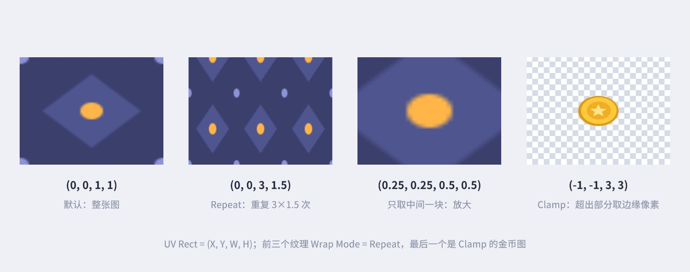
最后一格的金币图是 Clamp 模式，UV 从 -1 到 2，超出部分取的是边缘像素——金币图边缘是透明的，所以只在中间显示了一枚缩小的金币。如果边缘像素不透明，你会看到边缘那一行像素被拉成一条条色带。
| Image | RawImage | |
|---|---|---|
| 显示的内容 | Sprite（纹理上的一块区域） | 整张 Texture（任意类型） |
| 九宫格 / 平铺 / 填充 | 支持 | 不支持 |
| UV 控制 | 由精灵决定 | UV Rect 任意指定，可做滚动、缩放 |
| 能否进图集合批 | 能（Sprite Atlas） | 不能，每张纹理一般单独一个批次 |
| 典型用途 | 几乎所有 UI 切图 | RenderTexture（3D 角色展示、小地图）、网络下载的图片、视频、滚动背景 |
经验法则：默认用 Image；显示的不是“美术切图”而是“运行时产生的纹理”，或需要自由控制 UV 时用 RawImage。网络头像下载下来是 Texture2D，可以直接给 RawImage，免去 Sprite.Create 的开销；第 19 章的 3D 角色展示也是 RawImage + RenderTexture。
UGUI 的合批（把多个元素合成一次 Draw Call）有个前提：相邻元素使用同一张纹理和同一个材质。如果每个图标都是独立的 PNG，界面上 30 个图标就可能是 30 次 Draw Call。Sprite Atlas（精灵图集）把许多小精灵在打包时拼进一张大纹理，Image 引用的还是原来的精灵，但运行时它们共享同一张纹理，于是可以合批（图 4-14）。
Sprite Atlas 打包的时机也值得了解：编辑器里默认（Enabled For Builds）不使用图集，Image 引用的是原始纹理，只有在构建时或 Always Enabled 模式下才使用打包后的图集纹理。所以在编辑器里看 Frame Debugger 时，如果发现图标没有合批，先确认 Sprite Packer 的模式。另外，图集可以勾选 Include in Build：取消后图集不会随引用它的精灵一起自动加载，需要在 SpriteAtlasManager.atlasRequested 回调里自己提供（Late Binding），用于按需从 AssetBundle / Addressables 加载图集，这属于资源管理的进阶话题。
图集不是越大越好：一个界面只用到图集里的一个小图标，也要把整张图集加载进内存。常见的划分方式是“公共图集（通用按钮、图标）+ 每个大界面一个图集”。另外前面提到的两件事都和图集有冲突：Tiled 平铺在图集里只能按块生成网格，像素级点击检测需要可读纹理。哪些图该进图集、图集怎么划分、如何用 Frame Debugger 验证合批，第 20 章会完整展开。
做 UI 时和图片打交道最多，下面是作者在项目里反复遇到的问题，按“现象 → 原因 → 解决”整理。
最常见的原因有四个。第一，开了 Mipmap：UI 缩小显示时 GPU 会去采样更小的那一级，看起来一片模糊，UI 纹理关掉 Generate Mip Maps 即可。第二，显示尺寸和原图尺寸不成比例：一张 100 像素的图被显示成 137 像素，每个屏幕像素都落在两个纹理像素之间，双线性插值必然变软；关键图标尽量按 Set Native Size 或整数倍显示。第三，压缩：移动平台的 ASTC/ETC 压缩会让细线条和渐变出现色块，图标类小图可以单独设置更高的压缩质量。第四，Canvas 的缩放：Canvas Scaler 把 1920×1080 的设计稿缩到 1280×720 的屏幕上，所有图都缩小到三分之二，原图本身就该按设计分辨率甚至更高出图。
PNG 里完全透明的像素也有 RGB 值，很多软件把它们存成白色或黑色。缩放时双线性过滤会把边缘不透明像素和旁边“透明但 RGB 是白色”的像素混在一起，于是出现一圈白边。导入设置里的 Alpha Is Transparency 会让 Unity 在导入时用相邻像素的颜色“扩散”填充透明区域的 RGB，大多数情况下能解决问题；美术导出时勾选“透明区域保留颜色”或做一次出血（Bleed）处理更彻底。
运行时给 image.sprite 赋一张尺寸不同的图，RectTransform 不会自动变化。需要按原图大小显示就紧接着调用 image.SetNativeSize()；只想保持比例就开 Preserve Aspect。另外，sprite 的 setter 会调用 SetAllDirty()，同时标记布局、顶点、材质三种重建，比只改 color（只标记顶点）昂贵得多。帧动画式的“每帧换一张图”放在少量元素上没问题，大列表里成百上千个元素同时换图就要小心（重建的细节见第 12 章）。
Source Image 为空时，Image 用一张内置的白色纹理画纯色矩形。半透明遮罩、分割线、纯色背景都可以这么做，不必专门切一张白图。不过要知道，这张内置白纹理和你的图集不是同一张纹理，纯色块夹在两张图集图片之间会打断合批。对合批敏感的界面，可以在图集里放一张 4×4 的纯白小图，纯色块统一用它。
一张 1920×1080、大部分透明、只有角落有点花纹的装饰图，GPU 仍然要为整个矩形的每个像素做一次混合计算，这就是过度绘制（Overdraw）。全屏界面叠上几层这样的图，低端手机上填充率很快就成为瓶颈。做法是把花纹切成小图单独摆放，而不是“一张大透明图包打天下”。第 20 章会用 Overdraw 视图把这类问题直观地显示出来。
精灵放在 Resources 目录下可以用 Resources.Load<Sprite>("Icons/sword") 加载（路径不含扩展名），图集里的精灵可以用 SpriteAtlas.GetSprite(name) 获取；正式项目更常用 Addressables 管理加载和释放。注意 Resources.Load<Sprite> 对 Sprite Mode = Multiple 的图只返回第一个子精灵，要取全部用 Resources.LoadAll<Sprite>。资源加载策略在第 16 章 UI 框架里会结合界面生命周期讨论。
Image 的属性在代码里改起来都是一行，但背后触发的工作量差别很大。UGUI 的 Graphic 有三种“脏标记”：顶点脏（SetVerticesDirty，下一帧重新生成网格）、材质脏（SetMaterialDirty，重新设置材质）、布局脏（SetLayoutDirty，通知布局系统重新计算尺寸）。对照 Image.cs 和 Graphic.cs 里各个属性的 setter，可以整理出下表：
| 修改的属性 | 触发 | 备注 |
|---|---|---|
color | 顶点 | 只改顶点色，最便宜；按钮的 Color Tint 过渡甚至连顶点都不改，而是改 CanvasRenderer 的颜色（第 6 章） |
fillAmount / fillMethod / fillCenter / type / preserveAspect | 顶点 | 每帧改 fillAmount 做进度条没有问题 |
sprite | 布局 + 顶点 + 材质 | setter 调用 SetAllDirty；尺寸可能变化，所以要通知布局 |
material | 材质 | 可能打断合批 |
raycastTarget | 无重建 | 只是在 GraphicRegistry 里登记/注销，影响射线检测列表 |
enabled 开关、SetActive | 布局 + 顶点 + 材质 | 重新启用时 OnEnable 里 SetAllDirty；同时 Canvas 需要重新合批 |
| RectTransform 尺寸 | 布局 + 顶点 | OnRectTransformDimensionsChange 触发 |
所有 setter 都用 SetPropertyUtility 先比较新旧值，赋相同的值不会触发任何重建，所以“每帧把 color 设成同一个值”是安全的。不过脏标记只是第一步，标记之后 Canvas 在这一帧末尾重新生成网格、重新合批，重建与合批的完整流程和测量方法在第 12 章。
fillMethod 的 setter：{ SetVerticesDirty(); m_FillOrigin = 0; }——改 Fill Method 会把 Fill Origin 重置为 0。代码里要先设 fillMethod，再设 fillOrigin，反过来写 Origin 就白设了。目标：用一张 160×160 的边框图做出能任意改变大小的任务对话框，拖动右下角把手实时缩放；再一键切换 Simple / Sliced / Tiled，直观看到区别。
思路：边框图设好四边各 54 像素的 Border，Image Type 选 Sliced；对话框内的标题、正文、奖励格子、按钮都用锚点贴住对话框的边（第 3 章），这样对话框变大变小时内容跟着走。把手是一个实现了 IDragHandler 的小组件，按拖动量改 sizeDelta。
e.delta 是屏幕像素，而 sizeDelta 是画布单位，中间差一个 canvas.scaleFactor（Canvas Scaler 算出来的缩放，第 2 章）。不除这个系数，在高分辨率屏幕上拖动会“跑得比手快”。y 方向取负是因为屏幕坐标向上为正，而我们希望往下拖时高度变大。
切换 Image Type 的按钮只有几行，演示“运行时改 type 会立刻重建网格”：
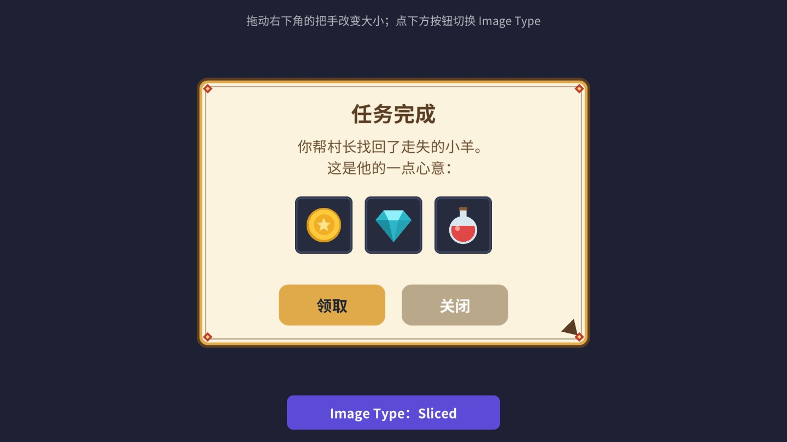
调参建议：边框不要切到图案的“中间”，多留几个像素的纯色区域，拉伸时更干净；Tiled 模式下注意看边上的细线，如果边的图案不是严格均匀的，平铺会出现接缝——这也是为什么对话框边框通常用 Sliced 而不是 Tiled。
目标：圆形技能按钮，点击后盖上一层半透明遮罩，遮罩像时钟指针扫过一样逐渐退去，中间显示剩余秒数，最后一秒显示一位小数，冷却结束闪一下。
思路：遮罩是一张和按钮同形状的圆，Image Type = Filled、Fill Method = Radial 360、Origin = Top、Clockwise 关闭；冷却时 fillAmount 从 1 降到 0。遮罩、文字都要关掉 Raycast Target，点击由底下的 Button 接收。
几个要点：
m_Mask.enabled = t > 0。fillAmount 为 0 时 Filled 已经不生成网格，但关掉组件连这次重建都省了。SetText("{0:1}", remain) 是 TMP 的格式化接口，不会每帧拼字符串产生垃圾，第 5 章细讲。Cast() 忽略，按钮本身仍然可点（播放“技能未就绪”的提示音之类的需求很常见）。如果希望冷却时按钮呈禁用样式，设 interactable = false 即可，第 6 章会讲它对状态机的影响。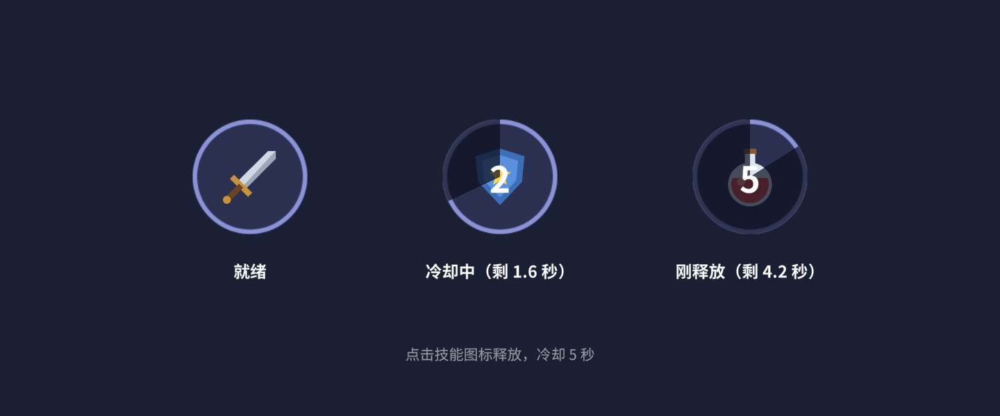
扩展方向：充能型技能（最多存 3 次）可以在图标角上加一个层数文字，冷却遮罩表示“下一层”的进度；冷却中按住显示技能说明，是 HUD 章（第 17 章）的内容。
目标：受击时血条立刻缩短，后面跟一条白色“残影”，停顿一下再平滑追上来，让玩家一眼看清这一下掉了多少血；血量低于 60% 变橙、低于 30% 变红；连续受击时白条攒住整段伤害。
思路：两个叠在一起的 Filled / Horizontal Image：下面一层是白条（Delay），上面一层是血条（Fill）。受伤时 Fill 立刻改，Delay 记录一个停顿计时，计时结束后用 Mathf.MoveTowards 匀速追赶。
讲解：
Damage 都重置 m_Hold，白条在连击过程中一直停着，攒住整段伤害，最后一起退去。这是格斗、动作游戏里的常见手感。Damage(380) 再 Tick 两次拍出来的“中间状态”。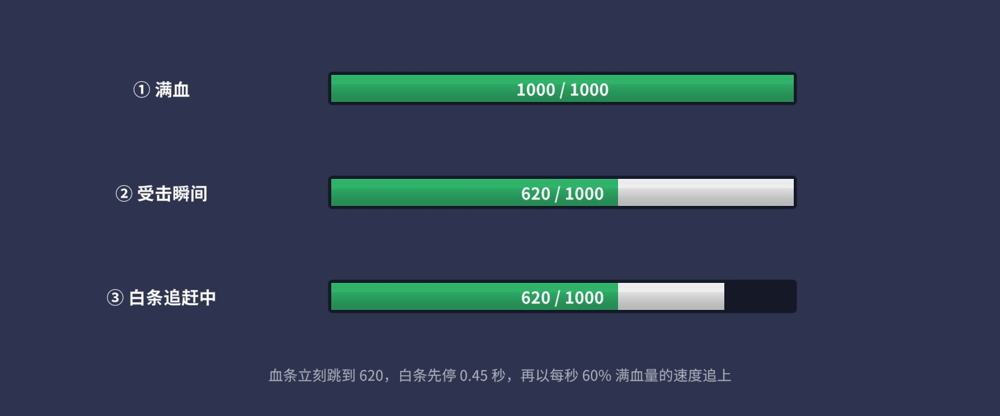
目标：星形按钮只在星星本身响应点击，五个尖角之间的透明区域点下去，点击穿透给后面的背景；圆环按钮中间的洞点不中。
思路：按 4.8 节，纹理开启 Read/Write，运行时设置 alphaHitTestMinimumThreshold。
代码在设置前先检查纹理是否可读，给出明确的提示，而不是让 setter 抛出一个没头没脑的异常。图 4-18 是用这三个按钮实拍的检测结果：在每个按钮的矩形范围里均匀取 15×15 个点，直接调用 Image.IsRaycastLocationValid，绿点表示能点中，红点表示点不中。
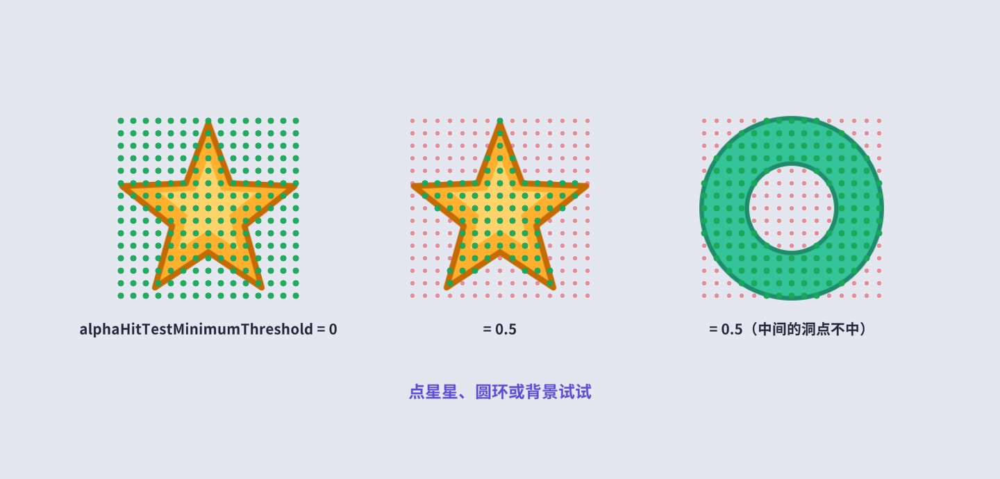
场景里有一个铺满全屏的“背景”按钮，配合 HitLog 组件显示每次点中的是谁，可以亲手验证：点星星的尖角之间，点中的是背景。
常见坑：
MapCoordinate 会按九宫格规则把点映射回纹理，但边框缩放比的计算用的是 pixelsPerUnit 而不是乘了 Multiplier 之后的值，Multiplier 不为 1 时边缘附近可能有偏差，以实际测试为准。目标：两层山丘剪影以不同速度向左滚动，形成视差，永远不会“滚到头”。
思路：不移动物体，而是移动 RawImage 的 UV。纹理设成横向 Repeat，每帧把 uvRect.x 加一点，画面就会循环滚动。远处的层滚得慢、近处的层滚得快，就有了纵深感。
讲解：
OnRectTransformDimensionsChange 里调用，分辨率变化时自动重算。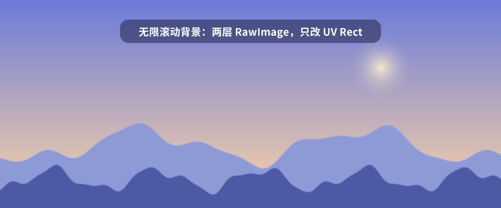
性能提示：修改 uvRect 会让这个 RawImage 重建网格（只有 4 个顶点），开销很小；但重建会标记 Canvas 需要重新合批。把持续运动的背景放进单独的子 Canvas（动静分离，第 20 章），避免拖累整个界面。如果背景层数很多，也可以写一个 UV 动画 Shader，让 GPU 根据时间偏移 UV，CPU 完全不用动（第 14 章）。
目标：圆形头像 + 按品质染色的外环 + 底部等级角标 + 右上角红点，点击轮换头像。
思路：方形头像放进一个带 Mask 的圆形节点里裁成圆；外环是白色 ring 精灵，用 Image.color 染成品质色；角标和红点按锚点定位到外框的底边中点和右上角（第 3 章九宫格位置角标的做法）。
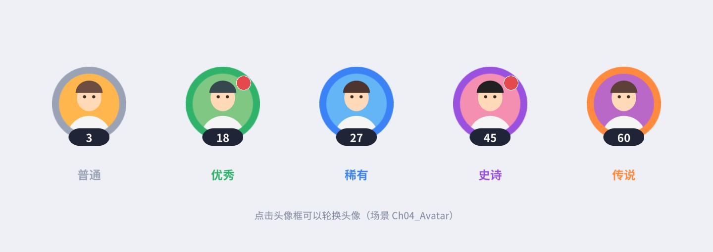
讲解：
_9s 结尾的图片的 Border 统一设成 16 像素。new Texture2D + SetPixels），并让它的 uvRect 缓慢缩放，做出“云层流动”的效果。思考：为什么这张纹理在场景保存后再打开会丢失？应该在什么时机生成它？